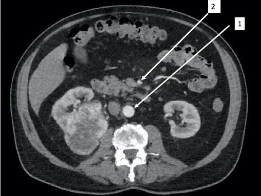
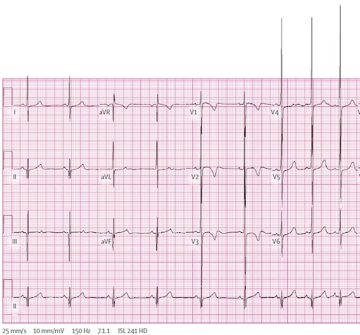

Un homme de 54 ans, tabagique au long cours et hypertendu depuis 12 ans (traitement par inhibiteur calcique), consulte son médecin traitant pour un épisode isolé d’hématurie macroscopique totale, sans caillot. Il a pour autre antécédent une appendicectomie dans l’enfance. L’hémogramme est le suivant : Hb 10,4 g/dL (VGM 78 µm3), GB 8 G/L, plaquettes 247 G/L. La créatininémie est à 110 µmol/L (débit de filtration glomérulaire estimé à 65 ml/min/1,73 m2). Une échographie rénale a montré une masse hyper-échogène de 7 cm sur le rein droit.
Quels sont les éléments (présents, ou à rechercher à l’interrogatoire et à l’examen clinique) pouvant faire évoquer une tumeur maligne du rein ? (une ou plusieurs réponses exactes)
[X] le tabagisme[X] l’hypertension artérielle chronique[ ] le traitement par inhibiteur calcique au long cours[ ] un antécédent familial de néoplasie endocrinienne multiple[ ] des douleurs lombairesQuel(s) examen(s) demandez-vous en première intention ?
[ ] cytologie urinaire avec examen anatomo-pathologique[ ] examen cyto-bactériologique des urines[ ] dosage sérique de l’érythropoïétine[X] scanner abdomino-pelvien avec et sans injection de produit de contraste[ ] ponction echoguidée de la masseVous avez demandé un scanner abdomino-pelvien. Sur la coupe montrée ci-dessous, quelles sont les propositions vraies ? (une ou plusieurs réponses exactes)

[X] il s’agit d’un scanner abdominal avec injection[ ] il s’agit d’une coupe coronale[ ] la structure numéro 1 est la veine cave inférieure
artère ?[ ] la coupe passe à hauteur du 3ème duodénum[ ] la structure numéro 2 correspond à l’artère mésentérique inférieure
sup ?Le radiologue conclut à une tumeur de 7 cm évoquant un carcinome rénal à cellules claires du rein droit sans envahissement loco-régional ni veineux. Le bilan d’extension est négatif. Vous portez l’indication d’une néphrectomie totale élargie droite, et obtenez l’accord de l’anesthésiste. L’acte chirurgical est réalisé par voie coelioscopique avec un saignement per opératoire de 800 ml. En post opératoire immédiat, le drain est non productif. Ses constantes sont une pression artérielle à 120/80 mmHg avec une fréquence cardiaque à 105/min. L’hémoglobine dosée 6h après la chirurgie est de 6,7 g/dL, les plaquettes à 120 G/L, le bilan d’hémostase est normal. Vous décidez en accord avec l’anesthésiste de transfuser le patient. Quelles sont les propositions vraies? (une ou plusieurs bonnes réponses)
[X] le patient doit recevoir des culots globulaires[ ] le patient doit recevoir des culots plaquettaires[ ] en cas de transfusion de culots globulaires, vous prescririez des culots O négatif[X] il faut disposer d’un résultat de recherche d’agglutinines irrégulières de moins de 48h[ ] il n’existe, depuis 2003, aucun risque de transmission d’agents pathogènes infectieux par une transfusion de culotglobulaire
Le patient a reçu 2 culots globulaires. Le lendemain, l’hémoglobine est remontée à 10 g/dL et la créatininémie est mesurée à 168 µmol/L. Quelle(s) est (sont) la (les) proposition(s) vraie(s) ?
[ ] il s’agit d’une insuffisance rénale aiguë[ ] il faut recalculer le débit de filtration glomérulaire[X] un obstacle sur le rein contro-latéral est probable[X] il peut s’agir d’une insuffisance rénale fonctionnelle[ ] il faut prescrire un ionogramme sur un échantillon urinaireL’état du patient et l’hémoglobine se sont stabilisés. L’anatomo-pathologiste confirme le diagnostic de carcinome rénal à cellules claires. Vous le classez pT2aN0M0R0. Trois mois après la chirurgie, le patient a une fonction rénale qui s’est stabilisée: la créatininémie est à 214 µmol/L (débit de filtration glomérulaire estimé à 29 ml/min/1,73m2). Quelles sont les propositions exactes ? (une ou plusieurs bonnes réponses)
[ ] il présente une insuffisance rénale chronique modérée[X] son traitement anti-hypertenseur doit comporter un inhibiteur du système rénine-angiotensine[ ] la cible de LDL cholestérol à atteindre est de 1,3 g/L[ ] il doit suivre un régime ne comportant pas plus que 1,5 g/kg de poids de protéines[ ] il faut préconiser un régime pauvre en sucres rapidesVous lui annnoncez qu’il a une insuffisance rénale chronique sévère. Quel(s) risque(s) court-il ?
[ ] diminution progressive de la diurèse[X] augmentation du risque cardio-vasculaire[ ] hyperphosphorémie[ ] dysfonction érectile[ ] cancer du rein contro-latéralLe médecin traitant du patient vous contacte pour la prise en charge en Affection de Longue Durée (ALD) par l’Assurance Maladie de votre patient. Quelle(s) est (sont) la (les) réponse(s) vraie(s) ?
[ ] le dossier d’ALD est rempli par le patient et validé par le médecin spécialiste[X] le médecin traitant doit préciser dans la demande le protocole de soins envisagé comprenant traitements, examens, et consultations[X] le protocole de soins doit être validé par le médecin conseil de l’assurance maladie[ ] en cas de prise en charge en ALD, reste à la charge du patient uniquement le ticket modérateur[ ] le tiers payant est la partie des soins payée par l’assuré qu’il soit ou non pris inscrit en ALDAprès trois ans de suivi, pendant lesquels le patient n’a pas interrompu son tabagisme, et avec un contrôle médiocre de la pression artérielle malgré le traitement par IEC, le patient a un débit de filtration glomérulaire estimé à 12 ml/min/1,73 m2. Le patient a une diminution de l’appétit et un dégoût de la viande. A l’examen clinique, la PA est à 172/95 mm Hg, il existe de discrets oedèmes des membres inférieurs, mais pas d’anomalie à l’auscultation pulmonaire. L’auscultation cardiaque est sans particularité. Le ionogramme sanguin montre une kaliémie à 6 mmol/L, une bicarbonatémie est à 18 mmol/L. Quelle est votre interprétation de l’électrocardiogramme ci-dessous ?

[X] rythme sinusal[ ] bloc sino-auriculaire[ ] ondes T évocatrices d’une hyperkaliémie[ ] complexes QRS élargis[X] hypertrophie ventriculaire gauchePour diminuer le syndrome oedémateux, que préconisez-vous à ce stade ? (une ou plusieurs réponses exactes)
[X] un régime pauvre en sel (moins de 6 g/j)[ ] une restriction hydrique[X] un diurétique de l’anse (furosémide)[ ] un diurétique thiazidique (hydrochlorothiazide)[ ] une ultrafiltration sanguine (début de l’hémodialyse)Le syndrome oedémateux s’est amendé sous furosémide. Le patient qui surveille régulièrement son bilan biologique revient vous voir car le biologiste lui a conseillé de consulter en urgence. Son ionogramme indique : créatininémie 280 µmol/L, potassium 4,9 mmol/L, bicarbonates 21 mmol/l, calcémie 2,68 mmol/l, phosphorémie 1,38 mmol/L Quelles sont la ou les causes possibles dans le contexte de la nouvelle anomalie biologique constatée ?
[ ] prise excessive de calcium[ ] prise de furosémide[X] insuffisance rénale chronique[X] hyperparathyroïdie secondaire[X] métastases osseuses d’un cancer du reinIl n’a aucun symptôme à part des douleurs du rachis lombaire, diffuses. Son électrocardiogramme est superposable à ses précédents électrocardiogrammes. Quel(s) examen(s) complémentaire(s) préconisez-vous pour explorer cette anomalie biologique ?
[ ] calcémie ionisée[ ] test de PAK[X] dosage de la PTH[ ] dosage de la PTHrp[ ] scintigraphie osseuseVous avez découvert des métastases osseuses. La fonction rénale du patient continue à se dégrader, et vous réévaluez les possibilités de traitement de l’insuffisance rénale terminale. Quelles propositions sont exactes ? (une ou plusieurs réponses exactes)
[ ] un cancer métastatique est une contre-indication à la mise en dialyse[ ] l’hémodialyse confère un avantage de survie par rapport à la dialyse péritonéale[ ] la confection d’une fistule artério-veineuse est contre-indiquée compte tenu du pronostic engagé[ ] un cathéter veineux central tunnelisé peut être mis en place pour débuter une hémodialyse[X] on doit discuter une transplantation à partir d’un donneur cadavériqueL’épouse du patient vous dit qu’elle a entendu parler lors d’une émission de télévision de la possibilité de donner un rein. D’une manière générale, concernant les donneurs vivants, quelles sont les propositions vraies? (une ou plusieurs bonnes réponses)
[ ] seuls les personnes ayant un lien génétique avec le receveur peuvent être donneurs[ ] la transplantation peut se faire en condition ABO incompatible[ ] la compatibilité rhésus doit être respectée[ ] l’incompatibilité HLA entre donneur et receveur est une contre-indication formelle[ ] le donneur est rémunéré sur une base proportionnelle au délai d’attente du receveur